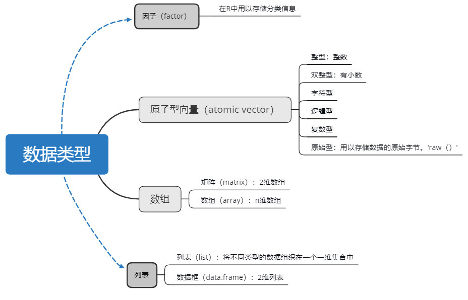
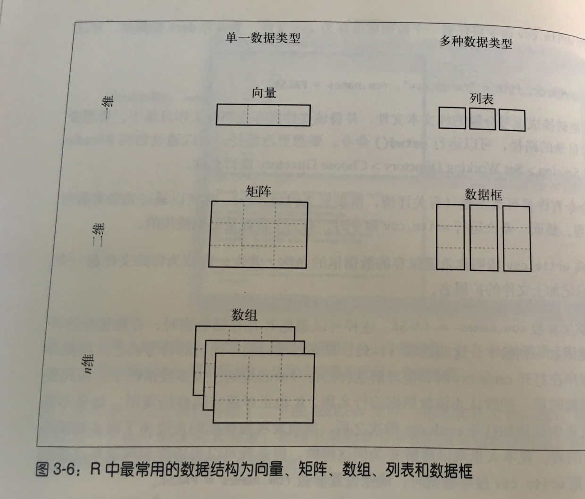
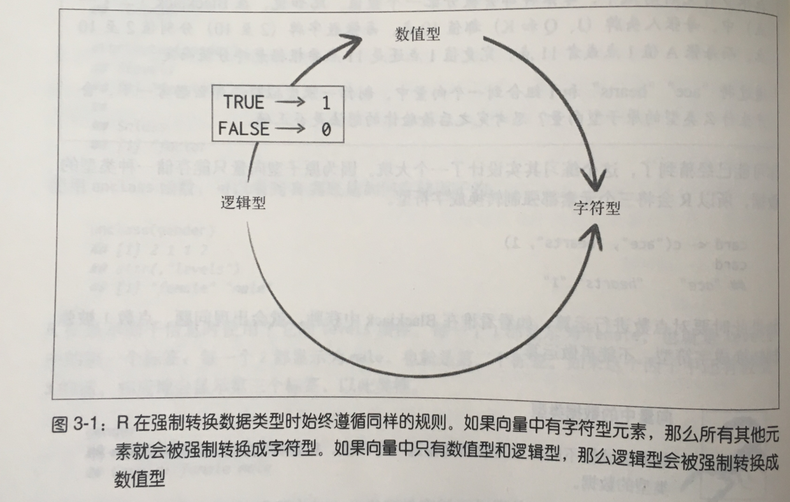

常用的数据类型包括： vector, list, matrix, data.frame

Vector
Vecror是一种一维变量，只能存放一种类型的数据。不同类型的数据有优先级，通常chr型优先级大于int型。
Vector创建
1 2 3 4 5 6 7 8 9 10 11 > x <- c(1,2,3) > x [1] 1 2 3 > x <- 1:10 > x [1] 1 2 3 4 5 6 7 8 9 10 > x <- c(1,'a') #其中含有字符串时，所有变量都会转变成字符 > x [1] "1" "a"
Vector 索引
vector的索引是从1开始的，且无办法反向索引，所以如果想要取变量的最后一个元素只能通过如此 x[length(x)] 获取。
1 2 3 4 5 6 7 > x <- 1:10 > x[1] [1] 1 > x[-1] #符号表示不取索引位的元素 [1] 2 3 4 5 6 7 8 9 10 > x[length(x)] [1] 10
但是当要截取一个字符串变量的其中几个字母时，就不能用[]的方法进行，而要改用 substring()函数。
1 2 3 4 5 6 7 8 9 > a <- "apple" > a[1] [1] "apple" > a[2] [1] NA > substring(a, 2) [1] "pple" > substring(a, 2, 3) [1] "pp"
Matrix
Matrix 为二维数组，但也是只能保存一种类型的数据。
1 2 3 4 5 6 7 > x <- matrix(1:10, 2, 5) #matrix(data = NA, nrow = 1, ncol = 1, byrow = FALSE, dimnames = NULL) > x [,1] [,2] [,3] [,4] [,5] [1,] 1 3 5 7 9 [2,] 2 4 6 8 10 > x[1,3] #取x行y列的元素 [1] 5
与matrix相关的几个函数
1 2 3 4 5 matrix() creates a matrix from the given set of values. as.matrix() attempts to turn its argument into a matrix. is.matrix() tests if its argument is a (strict) matrix.
data.frame
data.frame类比来说就像excel一样，既可以保存数字，又可以保存字符。
1 2 3 4 5 6 7 8 > name <- c("A", "B", "C") > score <- c(4, 7, 9) > a <- data.frame(name, score) > a name score 1 A 4 2 B 7 3 C 9
data.frame 的索引
data.frame的索引多种方法: x[i, j], x$ ，或者通过逻辑值索引…
1 2 3 4 5 6 7 8 9 10 > a[,2] [1] 4 7 9 > a$score [1] 4 7 9 > a[a$score >5,] name score 2 B 7 3 C 9
或是通过grep()函数寻找特定的元素，类似于excel的“ctrl + F”。
1 2 3 4 5 6 7 8 grep(pattern, x, ignore.case = FALSE, perl = FALSE, value = FALSE, fixed = FALSE, useBytes = FALSE, invert = FALSE) > grep('A',a$name) [1] 1 > index1 <- grep('A', a[,1]) > a[index1,] name score 1 A 4
属性
一般而言对象可以包含以下的属性：class, dim, name, level等等。属性可以将与对象相关的信息以一种便捷的形式存起来并附加给该对象。
以下是几个访问对象属性的函数
1 2 3 4 5 6 7 8 9 10 11 12 13 14 15 16 17 18 19 20 21 22 23 > class(a) #查询数据的类 [1] "data.frame" > typeof(a) #查询数据的类型 [1] "list" > str(a) #查询数据的结构 'data.frame': 3 obs. of 2 variables: $ name : Factor w/ 3 levels "A","B","C": 1 2 3 $ score: num 4 7 9 #a中的变量name包含了三个levels：A,B,C > a$name [1] A B C Levels: A B C > is.data.frame(a) #判断数据的类 [1] TRUE > as.data.frame(a) #转变数据的类 name score 1 A 4 2 B 7 3 C 9
最后，再来两张在《R语言入门与实践》看到的有意思的图作为总结。


完。